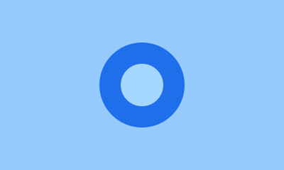
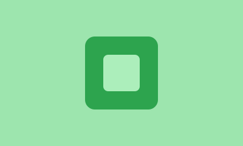
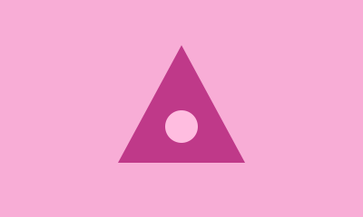
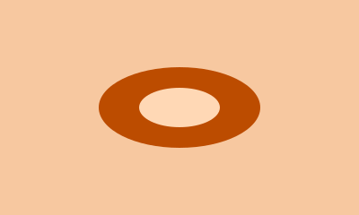
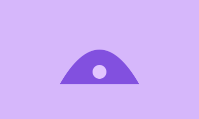
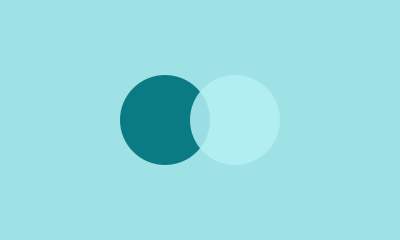

Fizikë
Laboratori i fizikës së lirë
Orari: Të premten · 10:00–11:30
Shih detajet për Laboratori i fizikës së lirëProgramimi në WWW · Pikënisja
Festivali shkencor sjell tri ditë eksperimente, punëtori dhe vëzhgime të hapura për të gjithë. Programi lexohet njësoj mirë në telefon, në tabletë dhe në ekran të gjerë.

Fizikë
Orari: Të premten · 10:00–11:30
Shih detajet për Laboratori i fizikës së lirë

Informatikë
Orari: Të shtunën · 09:00–13:00
Shih detajet për Hackathon: algoritme për qytetin

Ndërdisiplinore
Orari: Të dielën · 10:00–12:30
Shih detajet për Laboratori ndërdisiplinor i fizikës kuantike, kimisë organike dhe robotikës për nxënësit e çdo moshe
Hyrja është falas. Aktivitetet fillojnë në orarin e shënuar dhe vendet janë të kufizuara, prandaj ejani herët.
Për pyetje shkruani te organizatorët përmes faqes zyrtare të festivalit.